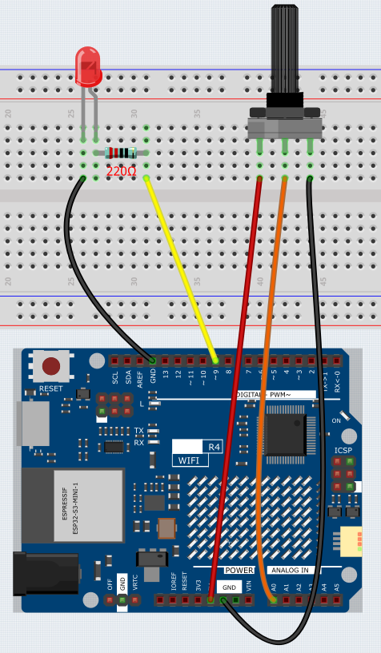
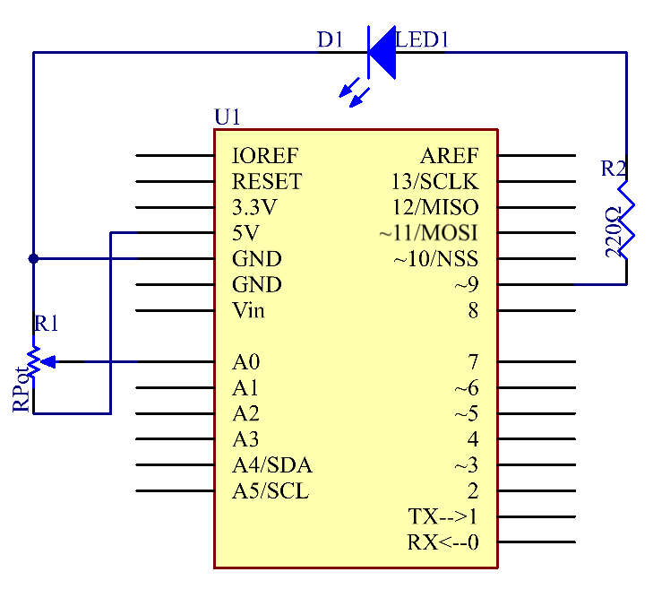

Potentiometer
Overview
In this lesson, let’s see how to change the luminance of an LED by a potentiometer, and receive the data of the potentiometer in Serial Monitor to see its value change.
Wiring
{kind=link}
Schematic Diagram
In this experiment, the potentiometer is used as voltage divider, meaning connecting devices to all of its three pins. Connect the middle pin of the potentiometer to pin A0 and the other two pins to 5V and GND respectively. Therefore, the voltage of the potentiometer is 0-5V. Spin the knob of the potentiometer, and the voltage at pin A0 will change. Then convert that voltage into a digital value (0-1024) with the AD converter in the control board. Through programming, we can use the converted digital value to control the brightness of the LED on the control board.
{kind=link}
Code
Note
You can open the file
08_Potentiometer.inounder the path ofBasic-Starter-Kit-for-Arduino-Uno-R4-WiFi-main\Codedirectly.Or copy this code into Arduino IDE.
After uploading the code to the Uno board, you can open the serial monitor to observe the potentiometer’s read values. As you turn the potentiometer knob, the read value will change accordingly. The raw analog reading from the potentiometer will range from (0) to (1023). Simultaneously, the code scales this value to a range of (0) to (255), which is also displayed on the serial monitor. This scaled value is then used to control the brightness of the connected LED. The LED will become brighter or dimmer based on the scaled value. It’s worth noting that while the theoretical range of the potentiometer is (0) to (1023), the actual range may vary slightly due to hardware tolerances.
Code Analysis
Initialization and Setup (Setting Pin Modes and Initializing Serial Communication)
Before we get into the loop, we define which pins we’re using and initialize the serial communication.
const int analogPin = 0; // Analog input pin connected to the potentiometer const int ledPin = 9; // Digital output pin connected to the LED void setup() { Serial.begin(9600); // Initialize serial communication with a baud rate of 9600 }
Reading Analog Input (Getting Data from Potentiometer)
In this segment, we read the analog data from the potentiometer and print it to the serial monitor.
inputValue = analogRead(analogPin); // Read the analog value from the potentiometer Serial.print("Input: "); // Print "Input: " to the serial monitor Serial.println(inputValue); // Print the raw input value to the serial monitor
Mapping and Scaling (Converting Potentiometer Data)
We scale the raw data from the potentiometer, which is in the range of 0-1023, to a new range of 0-255.
map(value, fromLow, fromHigh, toLow, toHigh)is used to convert a number from one range to another. For example, if the value is within the range offromLowandfromHigh, it will be converted to a corresponding value within the range oftoLowandtoHigh, maintaining proportionality between the two ranges.In this case, since the LED pin (pin 9) has a range of 0-255, we need to map values in the range of 0-1023 to match that same scale of 0-255.
outputValue = map(inputValue, 0, 1023, 0, 255); // Map the input value to a new range
Controlling LED and Serial Output
Finally, we control the LED’s brightness based on the scaled value and print the scaled value for monitoring.
Serial.print("Output: "); // Print "Output: " to the serial monitor Serial.println(outputValue); // Print the scaled output value to the serial monitor analogWrite(ledPin, outputValue); // Control the LED brightness based on the scaled value delay(1000);